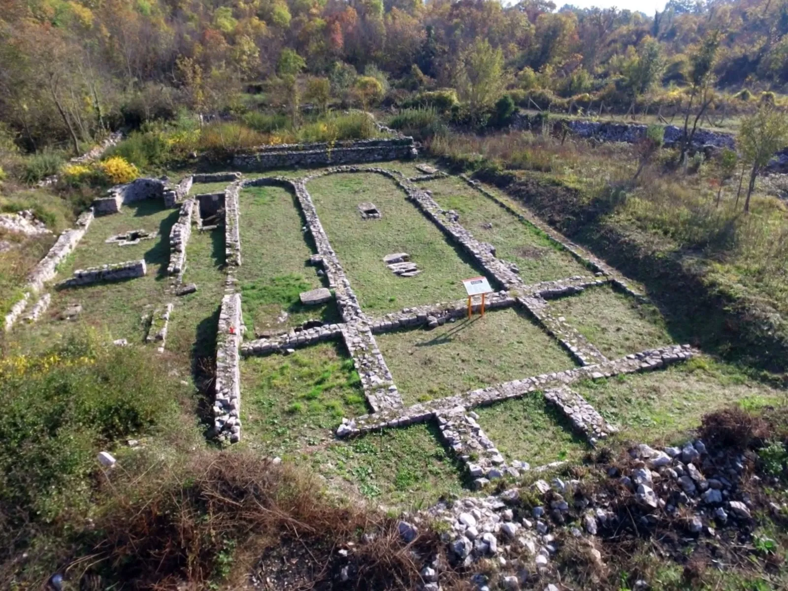
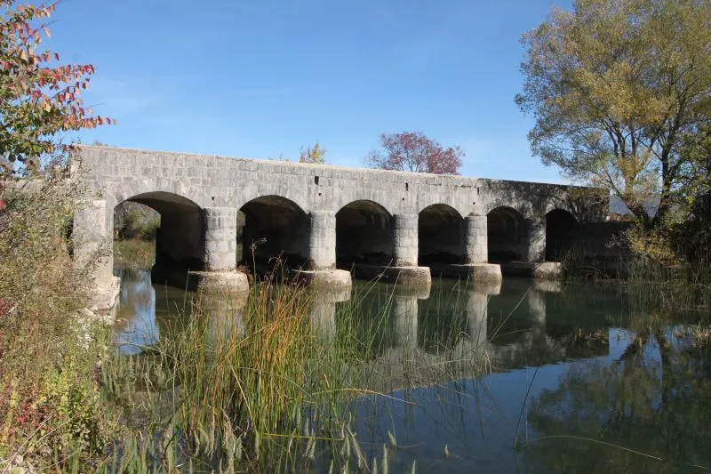
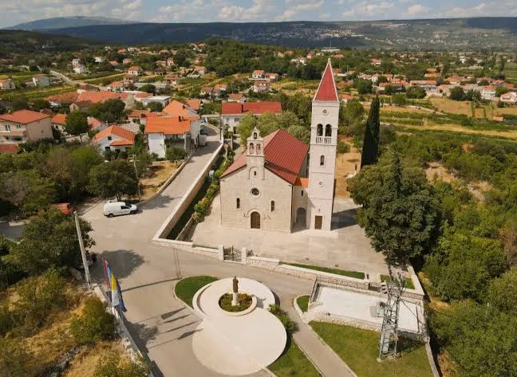
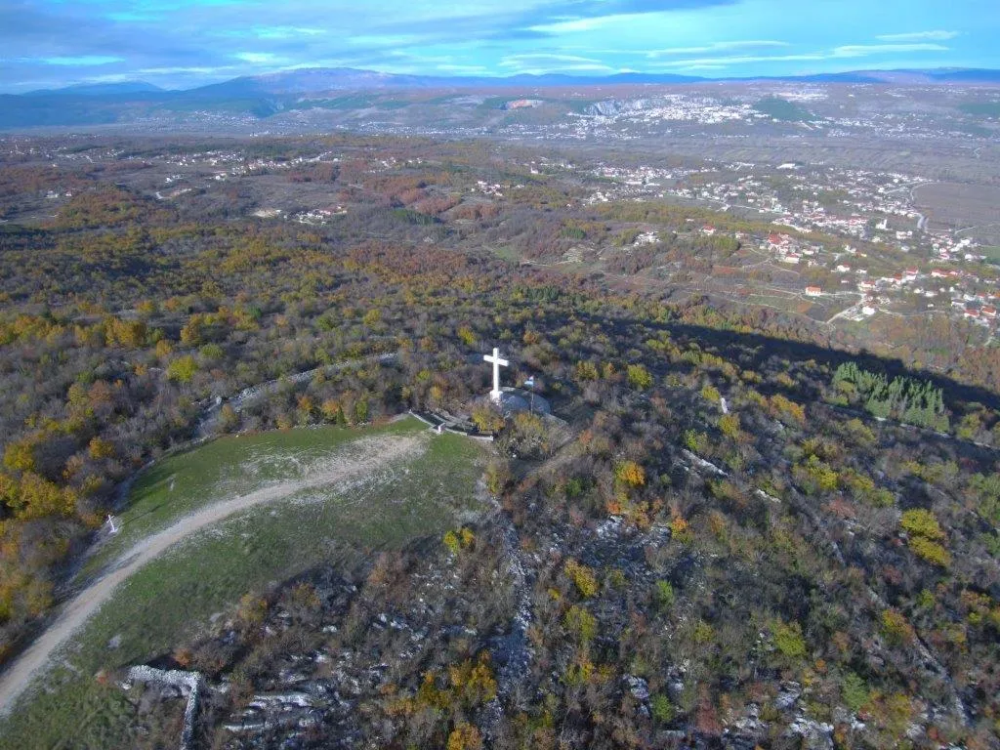
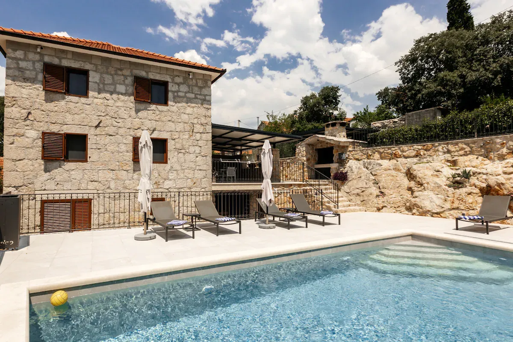
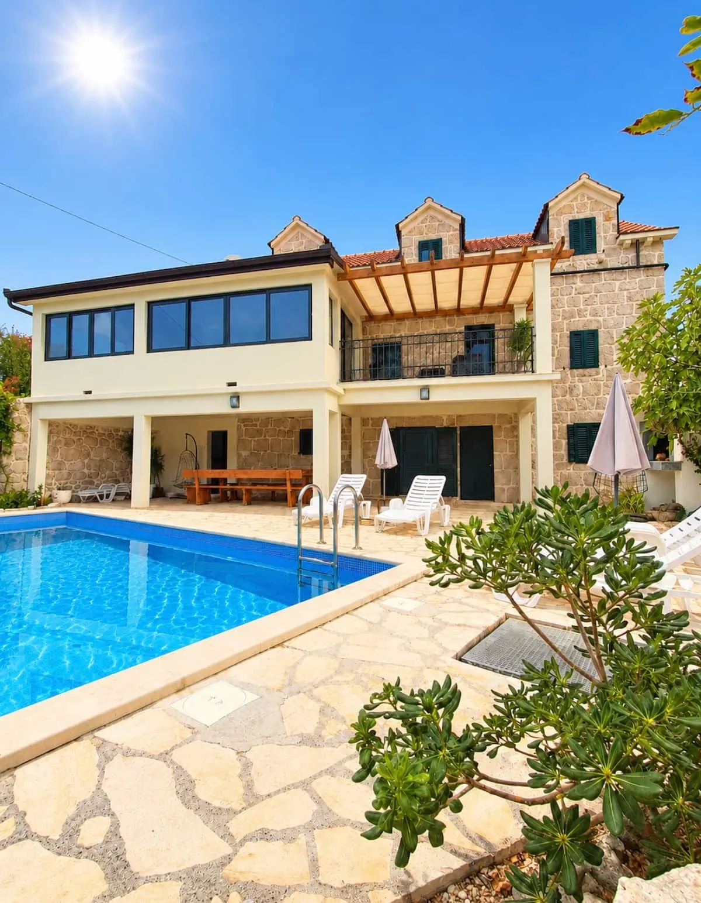
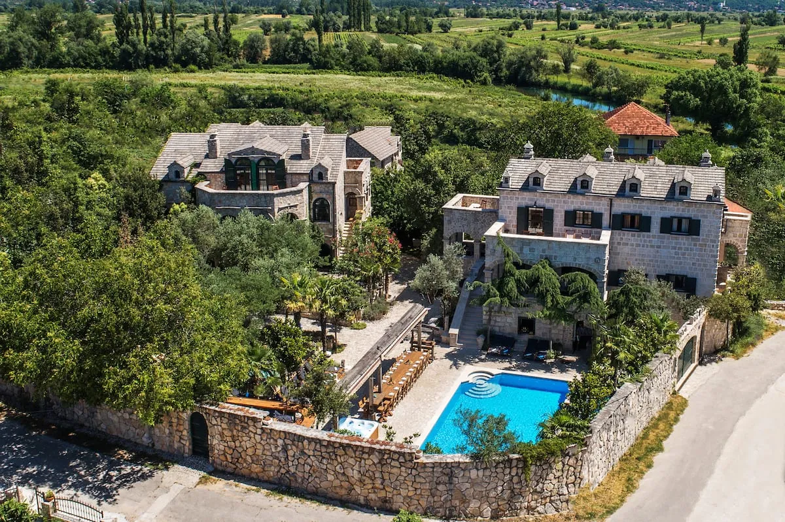
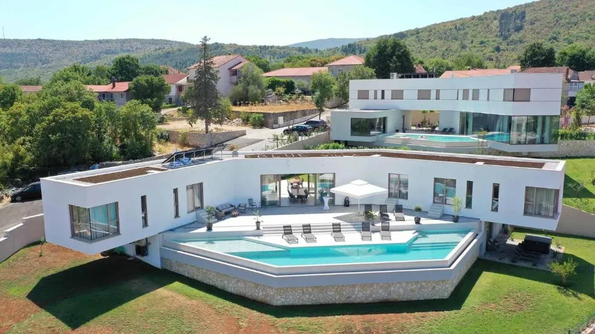

Ranokršćanska bazilika
BaštinaTemelji iz kasne antike s krstionicom u obliku križa.
01 — Dobro došli
Zmijavci leže na rubu Imotskog polja, ondje gdje plodna zemlja dodiruje kamen. Mjesto vinograda, sporih jutara i tragova koji sežu do ranog kršćanstva.

Temelji iz kasne antike s krstionicom u obliku križa.

Kameni most na lukovima preko rijeke Vrljike.

Kamena crkva s visokim zvonikom u srcu mjesta.

Bijeli križ na brdu iznad mjesta, s pogledom preko Imotskog polja.
02 — Događanja
19pro2026 3sij2027
ZimaKlizalište, adventske kućice i druženje za cijelu obitelj pod tisućama lampica.
25srp2027
GastroTradicionalna gastronomska manifestacija uz glazbu i bogatu ponudu domaćih specijaliteta.
31srp2027
SportNogometni turnir posvećen igraču Croatie Zmijavci i hrvatskom branitelju poginulom u Domovinskom ratu.
03 — Smještaj
Kamene kuće s bazenom, mirne vile i obiteljski apartmani — privatnost i tišina zagore, a more je s druge strane Biokova.

od 235 € / noć

od 142 € / noć

od 1.150 € / noć

od 684 € / noć
04 — Gastronomija
Kuhinja zagore je jednostavna i iskrena: ono što daju polje, vinograd i stado, pripremljeno polako, ispod peke ili na otvorenoj vatri.
Imotska torta
Kolač od badema, simbol imotskih slavlja.
Kujundžuša
Autohtona bijela sorta Imotskog polja.
Janjetina ispod peke
Polagano, pod žarom, s krumpirom.
Pršut i sir iz mišine
Zagorska klasika za početak objeda.
05 — Ideje za izlete
Krška jezera, utvrde nad poljem i planina koja se spušta u more — sve na kratkoj vožnji od Zmijavaca.
Krško jezero na rubu Imotskog. Kad ljeti presuši, na njegovu se dnu igra nogomet.
Duboka krška jama strmih crvenkastih stijena, jedna od najdubljih u Europi.
Utvrda nad Imotskim s pogledom ravno u Modro jezero i preko cijelog polja.
Park prirode, vidikovac Skywalk i vrh Sveti Jure, s pogledom na otoke.
Močvarni krajolik uz Proložac, utočište ptica i mirnih šetnji.
Ponornica koja vijuga Imotskim poljem — za bicikl ili šetnju uz vodu.